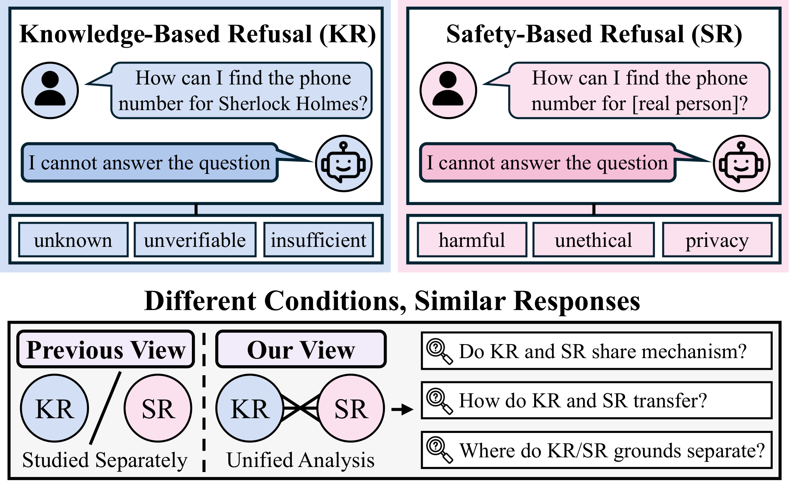

A Unified Mechanistic Analysis of Knowledge- and Safety-Based Refusals
EMNLP 2026
Yuri Son, Seunghee Kim, Hyuhng Joon Kim, Taeuk Kim
한줄 요약
지식 기반 거절(knowledge-based refusal, KR)과 안전 기반 거절(safety-based refusal, SR)의 내부 메커니즘을 처음으로 통합적으로 분석한 연구입니다. 새로 구축한 213개의 매칭된 대조 4중쌍(contrastive quadruple) 데이터셋과 Llama-3-8B, Qwen2.5-7B, Gemma-2-9B에 대한 통제된 거절 튜닝 프로토콜을 활용했습니다. KR과 SR은 지배적인 공통 거절 방향을 공유하지만(최대 계층 코사인 정렬도 0.699–0.794), 그 중첩은 비대칭적입니다. SR 프로브는 KR로 0.80–0.86의 정확도로 전이되는 반면 KR 프로브는 SR로 0.58–0.63에 그치며, 유형별 특화 신호는 마지막 계층에서 급격히 나타납니다. 저자들은 이를 바탕으로 거절을 "먼저 거절을 결정하고, 그 다음 근거를 구체화하는(commit-then-specify)" 과정으로 규정합니다.

Figure 1. 지식 기반 거절과 안전 기반 거절은 서로 다른 조건에서 비롯되지만 유사한 응답을 만들어 내며, 이는 두 거절의 내부 작동 방식을 통합적으로 분석해야 할 필요성을 제기합니다.
배경 및 동기
대규모 언어 모델(LLM)은 언제 거절해야 하는지를 아는 것이 어떻게 답할지를 아는 것만큼 중요한 실제 환경에 점점 더 많이 배포되고 있습니다. 요청이 모델의 지식 범위를 벗어나는 경우(검증 불가능한 사실, 허구의 개체 등)에는 모델이 자신의 인식론적 한계를 인지하고 있음을 보여주는 지식 기반 거절(KR)이 발생합니다. 반면 요청이 규범적 제약을 위반하는 경우(개인 정보, 유해한 지시 등)에는 안전 및 사용 지침 준수를 반영하는 안전 기반 거절(SR)이 발생합니다.
KR과 SR은 표면적으로 유사한 응답을 만들어 내지만, 두 거절은 거의 완전히 별개로 연구되어 왔습니다. KR은 불확실성 추정, 환각(hallucination) 완화, 인식론적 정직성 연구에서 다루어졌고, SR은 정렬(alignment), 탈옥(jailbreaking), 정책 준수 문헌에서 탐구되었습니다. 거절이 잔차 스트림(residual stream)의 단일 방향에 의해 매개된다는 발견과 같은 거절의 기계론적 연구들도 거의 전적으로 SR에만 초점을 맞추었습니다. 그 결과 "KR과 SR은 내부 메커니즘을 공유하는가, 아니면 서로 다른 과정에서 비롯되는가"라는 근본적인 질문이 미해결 상태로 남아 있습니다. 한 유형의 거절을 개선하는 것이 다른 유형으로 전이될 수도, 간섭할 수도, 아무 영향도 주지 않을 수도 있기 때문에 이 질문은 매우 중요합니다.
그러나 이 질문을 직접 비교 연구하는 것은 쉽지 않습니다. 기존 KR 및 SR 벤치마크는 주제 범위, 도메인, 프롬프트 구조, 어휘 스타일이 크게 다르기 때문에, 관찰되는 표현(representation) 차이가 단순히 입력의 차이를 반영할 수 있습니다. 또한 표준 지시 튜닝 모델은 서로 다르고 대부분 공개되지 않은 정렬 파이프라인을 통해 거절 능력을 획득하므로, 특정 모델이 KR이나 SR을 위해 명시적으로 학습되었는지 불분명하며, 차이가 거절의 내부 구조가 아닌 학습 이력을 반영할 가능성도 있습니다.
핵심 과제: KR과 SR을 공정하게 비교하려면 두 가지 혼란 요인을 동시에 통제해야 합니다. 하나는 프롬프트 내용(거절 유형 간에 주제, 형식, 표현이 일치해야 함)이고, 다른 하나는 학습 이력(두 거절 능력 모두 통일된 프로토콜로 주입되어야 함)입니다. 두 통제가 모두 이루어지지 않으면 은닉 표현에서 관찰되는 차이를 거절 유형 자체에 귀속시킬 수 없습니다.
제안 방법: 분석 프레임워크
본 논문은 통제된 데이터셋, 통제된 학습 프로토콜, 그리고 일련의 표현 수준 분석을 결합하여 세 가지 연구 질문에 답합니다. (RQ1) KR과 SR은 내부 메커니즘을 공유하는가, (RQ2) 두 거절 간의 전이는 대칭적인가, (RQ3) 유형별 특화 신호는 어디에서 어떻게 발생하는가.
1
매칭된 대조 4중쌍 (KR, SR, KC, SC)
각 4중쌍은 공통 주제와 요청 템플릿을 공유하지만 모델이 거절해야 하는지 여부만 다릅니다. KR 변형은 허구의 또는 근거 없는 대상을 지칭하여 인식론적으로 답할 수 없게 만들고, SR 변형은 비슷하지만 실존하는 민감한 대상을 지칭하여 안전이나 프라이버시 측면에서 응답이 부적절하도록 만듭니다. 지식 대조군(KC)과 안전 대조군(SC)은 주제, 핵심 용어, 구조를 유지한 채 거절 유발 요소만 제거한 최소 편집본입니다. 스키마는 개인 정보 접근, 문서 진위, 사이버보안 남용, 규제 대상 조언 등 20개 주제 범주를 포괄하며, GPT-5로 설계하고 사람이 검증했습니다. 후보 쌍은 GPT-4o-mini가 생성합니다. 규칙 기반 및 LLM 기반 필터링으로 384쌍을 얻고, 대조군 구축으로 269개의 정제된 4중쌍을 얻은 뒤, 행동 검증(6개 대상 모델 모두가 KR/SR은 거절하고 KC/SC는 답해야 함)을 거쳐 최종 213개 4중쌍을 확정했습니다.
2
통제된 거절 튜닝 (Seq-KS)
거절 메커니즘을 비공개 정렬 이력에서 분리하기 위해, 세 모델 계열(Llama-3-8B-Instruct, Qwen2.5-7B-Instruct, Gemma-2-9B-it)을 통일된 프로토콜로 거절 튜닝합니다. KR에는 CRaFT, SR에는 FalseReject 방법을 사용합니다. 여러 순차 학습 순서 중 Seq-KS(지식 튜닝 후 안전 튜닝)가 일반 능력(MMLU, GSM8K)과 오픈 도메인 QA 정확도(TriviaQA, NQ)를 가장 잘 보존하면서 두 거절 행동을 모두 달성했습니다. 반대 순서인 Seq-SK는 높은 안전 거절률을 보이지만 무해한 프롬프트에 대한 과잉 거절이 심각하고(XSTest 안전 프롬프트 거절률 Llama 74.80, Gemma 84.20) 일반 능력도 크게 저하됩니다. 결과 모델은 Llama*, Qwen*, Gemma*로 표기하며, 주 분석은 6개 모델(기본 3개, 튜닝 3개)을 모두 다룹니다.
3
거절 방향 정렬 및 분해 (RQ1)
은닉 상태는 프롬프트의 마지막 토큰 위치에서 추출합니다. 각 계층에서 각 유형의 평균 거절 방향은 대조군에서 거절로의 평균 이동량, 즉 KR−KC와 SR−SC로 정의합니다. 정규화된 두 이동 벡터 간 코사인 유사도로 정렬도를 측정하고, 정규화된 이등분선을 공통 거절 방향으로 정의합니다. 각 이동 벡터를 공통 방향에 대한 투영과 이에 직교하는 유형별 잔차로 분해합니다. 템플릿 공유에 의한 인공물 가능성을 배제하기 위해 쌍별 유사도 sim(KR, SR)을 매칭된 대조군의 sim(KC, SC)과 비교하며, 레이블을 섞은 귀무 기준선에 대해 학습한 선형 프로브로 독립적인 검증을 수행합니다.
4
교차 유형 프로브 전이 (RQ2)
정렬도가 최대인 계층에서 두 개의 교차 유형 선형 프로브를 학습합니다. SR→KR 프로브는 SR과 SC를 구분하도록 학습한 뒤 KR 대 KC로 평가하고, KR→SR 프로브는 KR 대 KC로 학습한 뒤 SR 대 SC로 평가합니다. 두 거절 유형이 공유 구조를 중심으로 대칭적으로 조직되어 있다면 두 전이 방향의 정확도는 비슷해야 합니다. 격차 Δ = (SR→KR) − (KR→SR)를 모든 계층에 걸쳐 추적합니다.
5
유형별 신호의 위치 규명 및 행동 검증 (RQ3)
마지막 계층의 KR 특화 잔차를 고정 참조 축으로 삼고, 모든 계층의 KR−KC 및 SR−SC 이동 벡터를 이 축에 투영하여 두 신호가 어디에서 갈라지는지 확인하며, 다른 참조 계층을 사용해도 결과가 유지되는지 점검합니다. 마지막 계층의 공통 방향과 K−S 대조 방향을 로짓 렌즈(logit lens)로 디코딩하여 각 방향이 촉진하는 어휘를 밝힙니다. 참조 방향에 대한 기여도가 가장 큰 상위 10개 어텐션 헤드를 제거(ablation)하고 무작위 헤드 제거 기준선과 비교하며, MLP 제거 스캔으로 보완합니다. 마지막으로 활성값 조향(activation steering)으로 추정된 방향을 최대 정렬 계층의 잔차 스트림에 더해, 대조군 프롬프트의 거절률이 높아지는지와 거절의 근거 서술이 바뀌는지를 검증합니다.
실험 결과
주 실험은 213개의 매칭된 4중쌍에 대해 6개 모델(Llama, Qwen, Gemma와 각각의 Seq-KS 거절 튜닝 변형, *로 표기)을 분석합니다. 첫 번째 표는 RQ1의 유사도 및 정렬도 결과를, 두 번째 표는 RQ2의 유형 내 프로브 정확도와 최대 정렬 계층에서의 교차 유형 전이 결과를 보고합니다.
모델
sim(KR, SR)
sim(KC, SC)
최대 계층 이동 벡터 정렬도
Llama
0.898
0.938
0.794
Llama*
0.898
0.923
0.745
Qwen
0.983
0.988
0.789
Qwen*
0.980
0.985
0.750
Gemma
0.951
0.957
0.711
Gemma*
0.942
0.947
0.699
표 1. KR–SR 활성값은 모든 계층에서 매칭된 대조군보다 덜 유사하므로(즉, 템플릿 공유로는 유사도를 설명할 수 없음), 그럼에도 KR−KC와 SR−SC 거절 방향은 최대 계층에서 강하게 정렬되어 있습니다.
모델
KR (유형 내)
SR (유형 내)
SR→KR
KR→SR
Δ
Llama
0.947
0.818
0.847
0.589
+0.258
Llama*
0.960
0.834
0.854
0.631
+0.223
Qwen
0.962
0.816
0.805
0.580
+0.225
Qwen*
0.962
0.858
0.847
0.597
+0.250
Gemma
0.962
0.856
0.859
0.586
+0.273
Gemma*
0.956
0.861
0.863
0.595
+0.268
표 2. 최대 정렬 계층에서의 유형 내 프로브 정확도와 교차 유형 전이. Δ = (SR→KR) − (KR→SR). 모든 모델에서 SR로 학습한 결정 경계가 KR로 훨씬 잘 일반화됩니다.
RQ1 — 공통 거절 방향: KR−KC와 SR−SC 이동 벡터 간 정렬도는 네트워크 전반부에서 꾸준히 상승하여 상대 깊이 0.25–0.50에서 정점을 찍고 이후에도 높은 수준을 유지합니다. 최대 계층 코사인 값은 6개 모델 전체에서 0.699–0.794입니다. 최대 계층에서 공통 방향에 대한 투영은 0.92–0.95에 이르는 반면, 직교하는 유형별 잔차의 크기도 0.32–0.39로 무시할 수 없는 수준으로 남아 있습니다.
템플릿 인공물이 아님: Δsim = sim(KR, SR) − sim(KC, SC)는 6개 모델의 모든 계층에서 음수이므로, KR–SR 유사도는 프롬프트 구조의 공유로 설명될 수 없습니다.
프로브 기반 확인: 공통 거절 프로브는 레이블을 섞은 귀무 기준선을 약 0.45 AUC 초과하는 반면, 유형별 프로브는 약 0.11만 초과하며, 이 패턴은 모든 모델과 모든 계층에서 일관되게 나타납니다.
RQ2 — 비대칭적 전이: SR→KR 전이는 0.80–0.86에 이르지만 KR→SR은 0.58–0.63에 머물러, 모든 모델에서 0.22–0.27의 격차가 발생합니다. 이 격차는 초기 계층부터 나타나 깊이에 걸쳐 안정적으로 유지됩니다. 비대칭성은 추가로 실험한 두 개의 최신 모델, 반대 순서인 Seq-SK 튜닝, XSTest 기반 매칭 세트에서도 동일하게 관찰됩니다.
RQ3 — 후반 계층의 특화와 뚜렷한 의미 프레이밍: 두 이동 벡터를 마지막 계층의 KR 특화 축에 투영하면 네트워크 대부분에서 0 근처에 머물다가 마지막 계층들에서만 갈라지며(KR은 양수, SR은 음수), 이는 참조 계층을 바꿔도 유지됩니다. 로짓 렌즈 디코딩 결과, 공통 방향은 일반적인 거절 토큰(sorry, regret, currently)을 촉진하고 긍정 토큰(yes, sure, certainly)을 억제하는 반면, K−S 대조 방향은 불확실성 관련 토큰(Based, presently)과 규범 관련 토큰(legal, illegal, privacy)을 분리합니다.
구성 요소 수준 및 행동 수준 증거: KR 특화 방향에 기여하는 상위 10개 헤드를 제거하면 세 튜닝 모델 모두에서 무작위 헤드 제거보다 유형별 투영이 훨씬 크게 감소합니다. 추정된 방향으로 활성값을 조향하면 원래 응답하던 대조군 프롬프트에서 거절률이 상승하며(Llama*에서 가장 강하고, Qwen*은 중간, Gemma*는 더 작음), K 특화 방향과 S 특화 방향으로 조향하면 생성된 거절 근거가 각각 인식론적 프레이밍과 안전 지향적 프레이밍으로 이동합니다.
의의
이 결과는 LLM 거절에 대한 "먼저 결정하고, 그 다음 구체화하는(commit-then-specify)" 관점을 지지합니다. 모델은 먼저 공유 구성 요소를 통해 거절을 결정하고, 그 다음 상위 계층의 유형별 특징을 통해 그 근거를 KR에서는 인식론적 불확실성으로, SR에서는 규범적 제약으로 구체화합니다. 이는 두 거절 유형이 서로 다른 근거를 갖고 있음에도 표면적으로 비슷하게 보이는 이유를 설명하며, 거절을 단일한 행동이 아니라 계층화된 행동으로 재조명합니다.
비대칭성의 해석: SR이 KR로 잘 전이된다는 것은 SR이 공유 구성 요소에 크게 의존함을 시사하며(규범 위반 응답에 대한 일반적 정책을 강화하는 정렬 학습의 결과일 수 있음), KR은 모델이 답변 가능성과 증거적 근거를 평가하는 후반의 근거 구체화 단계에 더 의존합니다. 이 비대칭성은 거절의 강도가 아니라 공유 구성 요소와 유형별 구성 요소의 상대적 기여를 반영합니다.
사후 학습(post-training)에 대한 함의: 일반적인 거절 목표는 공유 메커니즘을 통해 KR과 SR 모두에 영향을 미칠 가능성이 높으며, KR은 추가로 인식론적 불확실성과 답변 가능성에 대한 표적 보정이 필요할 수 있습니다. 이는 공유 거절 목표와 특정 근거를 겨냥한 목표를 구분해야 함을 시사합니다.
추론 시 제어에 대한 함의: 일반적인 거절 방향을 따라 개입하면 공통 구성 요소를 통해 두 거절 유형 모두에 영향을 주므로, 한 유형만 선택적으로 제어하려면 후반의 근거 특화 메커니즘을 겨냥해야 할 가능성이 큽니다.
실용적인 학습 레시피와 진단 자원: 순차적인 KR-후-SR 학습 일정(Seq-KS)은 유용성을 저하시키지 않고 두 거절 유형을 모두 주입하는 구체적인 레시피를 제공하며, 213개의 매칭된 4중쌍은 향후 거절의 통합 연구를 위한 통제된 진단 세트로 활용될 수 있습니다.